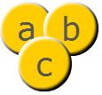
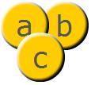

| window.runtime property | window.runtime.flash.display.Stage |
| Inheritance | Stage |
| Runtime Versions: | AIR 1.0, |
Some events that you might expect to be a part of the Stage class,
such as enterFrame, exitFrame,
frameConstructed, and render,
cannot be Stage events because a reference to the Stage object
cannot be guaranteed to exist in every situation where these events
are used. Because these events cannot be dispatched by the Stage
object, they are instead dispatched by every DisplayObject instance,
which means that you can add an event listener to
any DisplayObject instance to listen for these events.
These events, which are part of the DisplayObject class,
are called broadcast events to differentiate them from events
that target a specific DisplayObject instance.
Two other broadcast events, activate and deactivate,
belong to DisplayObject's superclass, EventDispatcher.
The activate and deactivate events
behave similarly to the DisplayObject broadcast events, except
that these two events are dispatched not only by all DisplayObject
instances, but also by all EventDispatcher instances and instances
of other EventDispatcher subclasses.
For more information on broadcast events, see the DisplayObject class.
 Hide Inherited Public Properties
Hide Inherited Public Properties Show Inherited Properties
Show Inherited Properties| Property | Defined By | ||
|---|---|---|---|
 | accessibilityImplementation : AccessibilityImplementation
The current accessibility implementation (AccessibilityImplementation)
for this InteractiveObject instance. | InteractiveObject | |
| accessibilityProperties : AccessibilityProperties
The current accessibility options for this display object. | DisplayObject | |
| align : String
A value from the StageAlign class that specifies the alignment of the stage in
Flash Player or the browser. | Stage | ||
| allowsFullScreen : Boolean [read-only]
Specifies whether this stage allows the use of the full screen mode
| Stage | ||
| alpha : Number
Indicates the alpha transparency value of the object specified. | DisplayObject | |
| autoOrients : Boolean
Specifies whether the stage automatically changes orientation when the device orientation changes. | Stage | ||
| blendMode : String
A value from the BlendMode class that specifies which blend mode to use. | DisplayObject | |
| blendShader : Shader [write-only]
Sets a shader that is used for blending the foreground and background. | DisplayObject | |
| cacheAsBitmap : Boolean
If set to true, Flash runtimes cache an internal bitmap representation of the
display object. | DisplayObject | |
| cacheAsBitmapMatrix : Matrix
If non-null, this Matrix object defines how a display object is rendered when
cacheAsBitmap is set to true. | DisplayObject | |
| color : uint
The SWF background color. | Stage | ||
| colorCorrection : String
Controls Flash runtime color correction for displays. | Stage | ||
| colorCorrectionSupport : String [read-only]
Specifies whether the Flash runtime is running on an operating system that supports
color correction and whether the color profile of the main (primary)
monitor can be read and understood by the Flash runtime. | Stage | ||
| constructor : * | Stage | ||
| contextMenu : NativeMenu
Specifies the context menu associated with this object. | InteractiveObject | |
| deviceOrientation : String [read-only]
The physical orientation of the device. | Stage | ||
| displayState : String
A value from the StageDisplayState class that specifies which display state to use. | Stage | ||
| doubleClickEnabled : Boolean
Specifies whether the object receives doubleClick events. | InteractiveObject | |
| filters : Array
An indexed array that contains each filter object currently associated with the display object. | DisplayObject | |
| focus : InteractiveObject
The interactive object with keyboard focus; or null if focus is not set
or if the focused object belongs to a security sandbox to which the calling object does not
have access. | Stage | ||
| focusRect : Object
Specifies whether this object displays a focus rectangle. | InteractiveObject | |
| frameRate : Number
Gets and sets the frame rate of the stage. | Stage | ||
| fullScreenHeight : uint [read-only]
Returns the height of the monitor that will be used when going to full screen size, if that state
is entered immediately. | Stage | ||
| fullScreenSourceRect : Rectangle
Sets the Flash runtime to scale a specific region of the stage to full-screen mode. | Stage | ||
| fullScreenWidth : uint [read-only]
Returns the width of the monitor that will be used when going to full screen size, if that state
is entered immediately. | Stage | ||
| height : Number [override]
Indicates the height of the display object, in pixels. | Stage | ||
| loaderInfo : LoaderInfo [read-only]
Returns a LoaderInfo object containing information about loading the file
to which this display object belongs. | DisplayObject | |
| mask : DisplayObject
The calling display object is masked by the specified mask object. | DisplayObject | |
| mouseChildren : Boolean [override]
Determines whether or not the children of the object are mouse, or user input device, enabled. | Stage | ||
| mouseEnabled : Boolean
Specifies whether this object receives mouse, or other user input, messages. | InteractiveObject | |
| mouseX : Number [read-only]
Indicates the x coordinate of the mouse or user input device position, in pixels. | DisplayObject | |
| mouseY : Number [read-only]
Indicates the y coordinate of the mouse or user input device position, in pixels. | DisplayObject | |
| name : String
Indicates the instance name of the DisplayObject. | DisplayObject | |
| nativeWindow : NativeWindow [read-only]
A reference to the NativeWindow object containing this Stage. | Stage | ||
| needsSoftKeyboard : Boolean
Specifies whether a virtual keyboard (an on-screen, software keyboard) should display
when this InteractiveObject instance receives focus. | InteractiveObject | |
| numChildren : int [override] [read-only]
Returns the number of children of this object. | Stage | ||
| opaqueBackground : Object
Specifies whether the display object is opaque with a certain background color. | DisplayObject | |
| orientation : String [read-only]
The current orientation of the stage. | Stage | ||
| parent : DisplayObjectContainer [read-only]
Indicates the DisplayObjectContainer object that contains this display object. | DisplayObject | |
| prototype : Object [static]
A reference to the prototype object of a class or function object. | Object | |
| quality : String
A value from the StageQuality class that specifies which rendering quality is used. | Stage | ||
| root : DisplayObject [read-only]
For a display object in a loaded SWF file, the root property is the
top-most display object in the portion of the display list's tree structure represented by that SWF file. | DisplayObject | |
| rotation : Number
Indicates the rotation of the DisplayObject instance, in degrees, from its original orientation. | DisplayObject | |
| rotationX : Number
Indicates the x-axis rotation of the DisplayObject instance, in degrees, from its original orientation relative to the 3D parent container. | DisplayObject | |
| rotationY : Number
Indicates the y-axis rotation of the DisplayObject instance, in degrees, from its original orientation relative to the 3D parent container. | DisplayObject | |
| rotationZ : Number
Indicates the z-axis rotation of the DisplayObject instance, in degrees, from its original orientation relative to the 3D parent container. | DisplayObject | |
| scale9Grid : Rectangle
The current scaling grid that is in effect. | DisplayObject | |
| scaleMode : String
A value from the StageScaleMode class that specifies which scale mode to use. | Stage | ||
| scaleX : Number
Indicates the horizontal scale (percentage) of the object as applied from the registration point. | DisplayObject | |
| scaleY : Number
Indicates the vertical scale (percentage) of an object as applied from the registration point of the object. | DisplayObject | |
| scaleZ : Number
Indicates the depth scale (percentage) of an object as applied from the registration point of the object. | DisplayObject | |
| scrollRect : Rectangle
The scroll rectangle bounds of the display object. | DisplayObject | |
| showDefaultContextMenu : Boolean
Specifies whether to show or hide the default items in the Flash runtime
context menu. | Stage | ||
| softKeyboardInputAreaOfInterest : Rectangle
Defines the area that should remain on-screen when a soft keyboard is displayed. | InteractiveObject | |
| softKeyboardRect : Rectangle [read-only]
A Rectangle specifying the area of the stage that is currently covered by a soft
keyboard. | Stage | ||
| stage : Stage [read-only]
The Stage of the display object. | DisplayObject | |
| stage3Ds : Vector.<Stage3D> [read-only]
A list of Stage3D objects available for displaying 3-dimensional content. | Stage | ||
| stageFocusRect : Boolean
Specifies whether or not objects display a glowing border when they have focus. | Stage | ||
| stageHeight : int
The current height, in pixels, of the Stage. | Stage | ||
| stageVideos : Vector.<StageVideo> [read-only]
A list of StageVideo objects available for playing external videos. | Stage | ||
| stageWidth : int
Specifies the current width, in pixels, of the Stage. | Stage | ||
| supportedOrientations : Vector.<String> [read-only]
The orientations supported by the current device. | Stage | ||
| supportsOrientationChange : Boolean [static] [read-only]
Whether the application supports changes in the stage orientation (and device rotation). | Stage | ||
| tabChildren : Boolean [override]
Determines whether the children of the object are tab enabled. | Stage | ||
| tabEnabled : Boolean
Specifies whether this object is in the tab order. | InteractiveObject | |
| tabIndex : int
Specifies the tab ordering of objects in a SWF file. | InteractiveObject | |
| textSnapshot : flash.text:TextSnapshot [override] [read-only]
Returns a TextSnapshot object for this DisplayObjectContainer instance. | Stage | ||
| transform : flash.geom:Transform
An object with properties pertaining to a display object's matrix, color transform, and pixel bounds. | DisplayObject | |
| visible : Boolean
Whether or not the display object is visible. | DisplayObject | |
| width : Number [override]
Indicates the width of the display object, in pixels. | Stage | ||
| wmodeGPU : Boolean [read-only]
Indicates whether GPU compositing is available and in use. | Stage | ||
| x : Number
Indicates the x coordinate of the DisplayObject instance relative to the local coordinates of
the parent DisplayObjectContainer. | DisplayObject | |
| y : Number
Indicates the y coordinate of the DisplayObject instance relative to the local coordinates of
the parent DisplayObjectContainer. | DisplayObject | |
| z : Number
Indicates the z coordinate position along the z-axis of the DisplayObject
instance relative to the 3D parent container. | DisplayObject | |
| Method | Defined By | ||
|---|---|---|---|
addChild(child:DisplayObject):DisplayObject [override]
Adds a child DisplayObject instance to this DisplayObjectContainer instance. | Stage | ||
addChildAt(child:DisplayObject, index:int):DisplayObject [override]
Adds a child DisplayObject instance to this DisplayObjectContainer
instance. | Stage | ||
addEventListener(type:String, listener:Function, useCapture:Boolean = false, priority:int = 0, useWeakReference:Boolean = false):void [override]
Registers an event listener object with an EventDispatcher object so that the listener
receives notification of an event. | Stage | ||
| areInaccessibleObjectsUnderPoint(point:Point):Boolean
Indicates whether the security restrictions
would cause any display objects to be omitted from the list returned by calling
the DisplayObjectContainer.getObjectsUnderPoint() method
with the specified point point. | DisplayObjectContainer | |
assignFocus(objectToFocus:InteractiveObject, direction:String):void
Sets keyboard focus to the interactive object specified by objectToFocus, with
the focus direction specified by the direction parameter. | Stage | ||
| contains(child:DisplayObject):Boolean
Determines whether the specified display object is a child of the DisplayObjectContainer instance or
the instance itself. | DisplayObjectContainer | |
dispatchEvent(event:Event):Boolean [override]
Dispatches an event into the event flow. | Stage | ||
| getBounds(targetCoordinateSpace:DisplayObject):Rectangle
Returns a rectangle that defines the area of the display object relative to the coordinate system
of the targetCoordinateSpace object. | DisplayObject | |
| getChildAt(index:int):DisplayObject
Returns the child display object instance that exists at the specified index. | DisplayObjectContainer | |
| getChildByName(name:String):DisplayObject
Returns the child display object that exists with the specified name. | DisplayObjectContainer | |
| getChildIndex(child:DisplayObject):int
Returns the index position of a child DisplayObject instance. | DisplayObjectContainer | |
| getObjectsUnderPoint(point:Point):Array
Returns an array of objects that lie under the specified point and are children
(or grandchildren, and so on) of this DisplayObjectContainer instance. | DisplayObjectContainer | |
| getRect(targetCoordinateSpace:DisplayObject):Rectangle
Returns a rectangle that defines the boundary of the display object,
based on the coordinate system defined by the targetCoordinateSpace
parameter, excluding any strokes on shapes. | DisplayObject | |
|
Converts the point object from the Stage (global) coordinates
to the display object's (local) coordinates. | DisplayObject | |
| globalToLocal3D(point:Point):Vector3D
Converts a two-dimensional point from the Stage (global) coordinates to a
three-dimensional display object's (local) coordinates. | DisplayObject | |
hasEventListener(type:String):Boolean [override]
Checks whether the EventDispatcher object has any listeners registered for a specific type
of event. | Stage | ||
| hasOwnProperty(name:String):Boolean
Indicates whether an object has a specified property defined. | Object | |
| hitTestObject(obj:DisplayObject):Boolean
Evaluates the bounding box of the display object to see if it overlaps or intersects with the
bounding box of the obj display object. | DisplayObject | |
| hitTestPoint(x:Number, y:Number, shapeFlag:Boolean = false):Boolean
Evaluates the display object to see if it overlaps or intersects with the
point specified by the x and y parameters. | DisplayObject | |
invalidate():void
Calling the invalidate() method signals Flash runtimes to alert display objects
on the next opportunity it has to render the display list (for example, when the playhead
advances to a new frame). | Stage | ||
isFocusInaccessible():Boolean
Determines whether the Stage.focus property returns null for
security reasons. | Stage | ||
| isPrototypeOf(theClass:Object):Boolean
Indicates whether an instance of the Object class is in the prototype chain of the object specified
as the parameter. | Object | |
| local3DToGlobal(point3d:Vector3D):Point
Converts a three-dimensional point of the three-dimensional display
object's (local) coordinates to a two-dimensional point in the Stage (global) coordinates. | DisplayObject | |
|
Converts the point object from the display object's (local) coordinates to the
Stage (global) coordinates. | DisplayObject | |
| propertyIsEnumerable(name:String):Boolean
Indicates whether the specified property exists and is enumerable. | Object | |
| removeChild(child:DisplayObject):DisplayObject
Removes the specified child DisplayObject instance from the child list of the DisplayObjectContainer instance. | DisplayObjectContainer | |
removeChildAt(index:int):DisplayObject [override]
Removes a child DisplayObject from the specified index position in the child list of
the DisplayObjectContainer. | Stage | ||
| removeChildren(beginIndex:int = 0, endIndex:int = 0x7fffffff):void
Removes one or more child DisplayObject instances from the DisplayObjectContainer instance. | DisplayObjectContainer | |
| removeEventListener(type:String, listener:Function, useCapture:Boolean = false):void
Removes a listener from the EventDispatcher object. | EventDispatcher | |
| requestSoftKeyboard():Boolean
Raises a virtual keyboard. | InteractiveObject | |
setAspectRatio(newAspectRatio:String):void
Sets the stage to an orientation with the specified aspect ratio. | Stage | ||
setChildIndex(child:DisplayObject, index:int):void [override]
Changes the position of an existing child in the display object container. | Stage | ||
setOrientation(newOrientation:String):void
Sets the stage to the specified orientation. | Stage | ||
| setPropertyIsEnumerable(name:String, isEnum:Boolean = true):void
Sets the availability of a dynamic property for loop operations. | Object | |
| swapChildren(child1:DisplayObject, child2:DisplayObject):void
Swaps the z-order (front-to-back order) of the two specified child objects. | DisplayObjectContainer | |
swapChildrenAt(index1:int, index2:int):void [override]
Swaps the z-order (front-to-back order) of the child objects at the two specified index positions in the
child list. | Stage | ||
| toLocaleString():String
Returns the string representation of this object, formatted according to locale-specific conventions. | Object | |
| toString():String
Returns the string representation of the specified object. | Object | |
| valueOf():Object
Returns the primitive value of the specified object. | Object | |
willTrigger(type:String):Boolean [override]
Checks whether an event listener is registered with this EventDispatcher object or any of
its ancestors for the specified event type. | Stage | ||
| Event | Summary | Defined By | ||
|---|---|---|---|---|
| [broadcast event] Dispatched when the Flash Player or AIR application gains operating system focus and becomes active. | EventDispatcher | ||
| added | Dispatched when a display object is added to the display list. | DisplayObject | |
| addedToStage | Dispatched when a display object is added to the on stage display list, either directly or through the addition of a sub tree in which the display object is contained. | DisplayObject | |
| clear | Dispatched when the user selects 'Clear' (or 'Delete') from the text context menu. | InteractiveObject | |
| click | Dispatched when a user presses and releases the main button of the user's pointing device over the same InteractiveObject. | InteractiveObject | |
| contextMenu | Dispatched when a user gesture triggers the context menu associated with this interactive object in an AIR application. | InteractiveObject | |
| copy | Dispatched when the user activates the platform-specific accelerator key combination for a copy operation or selects 'Copy' from the text context menu. | InteractiveObject | |
| cut | Dispatched when the user activates the platform-specific accelerator key combination for a cut operation or selects 'Cut' from the text context menu. | InteractiveObject | |
| [broadcast event] Dispatched when the Flash Player or AIR application operating loses system focus and is becoming inactive. | EventDispatcher | ||
| doubleClick | Dispatched when a user presses and releases the main button of a pointing device twice in rapid succession over the same InteractiveObject when that object's doubleClickEnabled flag is set to true. | InteractiveObject | |
| enterFrame | [broadcast event] Dispatched when the playhead is entering a new frame. | DisplayObject | |
| exitFrame | [broadcast event] Dispatched when the playhead is exiting the current frame. | DisplayObject | |
| focusIn | Dispatched after a display object gains focus. | InteractiveObject | |
| focusOut | Dispatched after a display object loses focus. | InteractiveObject | |
| frameConstructed | [broadcast event] Dispatched after the constructors of frame display objects have run but before frame scripts have run. | DisplayObject | |
| Dispatched when the Stage object enters, or leaves, full-screen mode. | Stage | |||
| gesturePan | Dispatched when the user moves a point of contact over the InteractiveObject instance on a touch-enabled device (such as moving a finger from left to right over a display object on a mobile phone or tablet with a touch screen). | InteractiveObject | |
| gesturePressAndTap | Dispatched when the user creates a point of contact with an InteractiveObject instance, then taps on a touch-enabled device (such as placing several fingers over a display object to open a menu and then taps one finger to select a menu item on a mobile phone or tablet with a touch screen). | InteractiveObject | |
| gestureRotate | Dispatched when the user performs a rotation gesture at a point of contact with an InteractiveObject instance (such as touching two fingers and rotating them over a display object on a mobile phone or tablet with a touch screen). | InteractiveObject | |
| gestureSwipe | Dispatched when the user performs a swipe gesture at a point of contact with an InteractiveObject instance (such as touching three fingers to a screen and then moving them in parallel over a display object on a mobile phone or tablet with a touch screen). | InteractiveObject | |
| gestureTwoFingerTap | Dispatched when the user presses two points of contact over the same InteractiveObject instance on a touch-enabled device (such as presses and releases two fingers over a display object on a mobile phone or tablet with a touch screen). | InteractiveObject | |
| gestureZoom | Dispatched when the user performs a zoom gesture at a point of contact with an InteractiveObject instance (such as touching two fingers to a screen and then quickly spreading the fingers apart over a display object on a mobile phone or tablet with a touch screen). | InteractiveObject | |
| imeStartComposition | This event is dispatched to any client app that supports inline input with an IME | InteractiveObject | |
| keyDown | Dispatched when the user presses a key. | InteractiveObject | |
| keyFocusChange | Dispatched when the user attempts to change focus by using keyboard navigation. | InteractiveObject | |
| keyUp | Dispatched when the user releases a key. | InteractiveObject | |
| middleClick | Dispatched when a user presses and releases the middle button of the user's pointing device over the same InteractiveObject. | InteractiveObject | |
| middleMouseDown | Dispatched when a user presses the middle pointing device button over an InteractiveObject instance. | InteractiveObject | |
| middleMouseUp | Dispatched when a user releases the pointing device button over an InteractiveObject instance. | InteractiveObject | |
| mouseDown | Dispatched when a user presses the pointing device button over an InteractiveObject instance. | InteractiveObject | |
| mouseFocusChange | Dispatched when the user attempts to change focus by using a pointer device. | InteractiveObject | |
| Dispatched by the Stage object when the pointer moves out of the stage area. | Stage | |||
| mouseMove | Dispatched when a user moves the pointing device while it is over an InteractiveObject. | InteractiveObject | |
| mouseOut | Dispatched when the user moves a pointing device away from an InteractiveObject instance. | InteractiveObject | |
| mouseOver | Dispatched when the user moves a pointing device over an InteractiveObject instance. | InteractiveObject | |
| mouseUp | Dispatched when a user releases the pointing device button over an InteractiveObject instance. | InteractiveObject | |
| mouseWheel | Dispatched when a mouse wheel is spun over an InteractiveObject instance. | InteractiveObject | |
| nativeDragComplete | Dispatched by the drag initiator InteractiveObject when the user releases the drag gesture. | InteractiveObject | |
| nativeDragDrop | Dispatched by the target InteractiveObject when a dragged object is dropped on it and the drop has been accepted with a call to DragManager.acceptDragDrop(). | InteractiveObject | |
| nativeDragEnter | Dispatched by an InteractiveObject when a drag gesture enters its boundary. | InteractiveObject | |
| nativeDragExit | Dispatched by an InteractiveObject when a drag gesture leaves its boundary. | InteractiveObject | |
| nativeDragOver | Dispatched by an InteractiveObject continually while a drag gesture remains within its boundary. | InteractiveObject | |
| nativeDragStart | Dispatched at the beginning of a drag operation by the InteractiveObject that is specified as the drag initiator in the DragManager.doDrag() call. | InteractiveObject | |
| nativeDragUpdate | Dispatched during a drag operation by the InteractiveObject that is specified as the drag initiator in the DragManager.doDrag() call. | InteractiveObject | |
| Dispatched by the Stage object when the stage orientation changes. | Stage | |||
| Dispatched by the Stage object when the stage orientation begins changing. | Stage | |||
| paste | Dispatched when the user activates the platform-specific accelerator key combination for a paste operation or selects 'Paste' from the text context menu. | InteractiveObject | |
| proximityBegin | Dispatched when the user lowers an active stylus past the proximity detection threshold of the screen. | InteractiveObject | |
| proximityEnd | Dispatched when the user lifts an active stylus above the proximity detection threshold of the screen. | InteractiveObject | |
| proximityMove | Dispatched when the user moves an active stylus over the screen while remaining within the proximity detection threshold. | InteractiveObject | |
| proximityOut | Dispatched when the user moves an active stylus away from this InteractiveObject while remaining within the proximity detection threshold of the screen. | InteractiveObject | |
| proximityOver | Dispatched when the user moves an active stylus directly above this InteractiveObject while remaining within the proximity detection threshold of the screen. | InteractiveObject | |
| proximityRollOut | Dispatched when the user moves an active stylus away from this InteractiveObject and any of its children while remaining within the proximity detection threshold of the screen. | InteractiveObject | |
| proximityRollOver | Dispatched when the user moves an active stylus over this InteractiveObject from outside the object's tree of descendents in the display list (while remaining within the proximity detection threshold of the screen). | InteractiveObject | |
| removed | Dispatched when a display object is about to be removed from the display list. | DisplayObject | |
| removedFromStage | Dispatched when a display object is about to be removed from the display list, either directly or through the removal of a sub tree in which the display object is contained. | DisplayObject | |
| render | [broadcast event] Dispatched when the display list is about to be updated and rendered. | DisplayObject | |
| Dispatched when the scaleMode property of the Stage object is set to StageScaleMode.NO_SCALE and the SWF file is resized. | Stage | |||
| rightClick | Dispatched when a user presses and releases the right button of the user's pointing device over the same InteractiveObject. | InteractiveObject | |
| rightMouseDown | Dispatched when a user presses the pointing device button over an InteractiveObject instance. | InteractiveObject | |
| rightMouseUp | Dispatched when a user releases the pointing device button over an InteractiveObject instance. | InteractiveObject | |
| rollOut | Dispatched when the user moves a pointing device away from an InteractiveObject instance. | InteractiveObject | |
| rollOver | Dispatched when the user moves a pointing device over an InteractiveObject instance. | InteractiveObject | |
| selectAll | Dispatched when the user activates the platform-specific accelerator key combination for a select all operation or selects 'Select All' from the text context menu. | InteractiveObject | |
| softKeyboardActivate | Dispatched immediately after the soft keyboard is raised. | InteractiveObject | |
| softKeyboardActivating | Dispatched immediately before the soft keyboard is raised. | InteractiveObject | |
| softKeyboardDeactivate | Dispatched immediately after the soft keyboard is lowered. | InteractiveObject | |
| Dispatched by the Stage object when the state of the stageVideos property changes. | Stage | |||
| tabChildrenChange | Dispatched when the value of the object's tabChildren flag changes. | InteractiveObject | |
| tabEnabledChange | Dispatched when the object's tabEnabled flag changes. | InteractiveObject | |
| tabIndexChange | Dispatched when the value of the object's tabIndex property changes. | InteractiveObject | |
| textInput | Dispatched when a user enters one or more characters of text. | InteractiveObject | |
| touchBegin | Dispatched when the user first contacts a touch-enabled device (such as touches a finger to a mobile phone or tablet with a touch screen). | InteractiveObject | |
| touchEnd | Dispatched when the user removes contact with a touch-enabled device (such as lifts a finger off a mobile phone or tablet with a touch screen). | InteractiveObject | |
| touchMove | Dispatched when the user moves the point of contact with a touch-enabled device (such as drags a finger across a mobile phone or tablet with a touch screen). | InteractiveObject | |
| touchOut | Dispatched when the user moves the point of contact away from InteractiveObject instance on a touch-enabled device (such as drags a finger from one display object to another on a mobile phone or tablet with a touch screen). | InteractiveObject | |
| touchOver | Dispatched when the user moves the point of contact over an InteractiveObject instance on a touch-enabled device (such as drags a finger from a point outside a display object to a point over a display object on a mobile phone or tablet with a touch screen). | InteractiveObject | |
| touchRollOut | Dispatched when the user moves the point of contact away from an InteractiveObject instance on a touch-enabled device (such as drags a finger from over a display object to a point outside the display object on a mobile phone or tablet with a touch screen). | InteractiveObject | |
| touchRollOver | Dispatched when the user moves the point of contact over an InteractiveObject instance on a touch-enabled device (such as drags a finger from a point outside a display object to a point over a display object on a mobile phone or tablet with a touch screen). | InteractiveObject | |
| touchTap | Dispatched when the user lifts the point of contact over the same InteractiveObject instance on which the contact was initiated on a touch-enabled device (such as presses and releases a finger from a single point over a display object on a mobile phone or tablet with a touch screen). | InteractiveObject | |
align | property |
align:String| Runtime Versions: | AIR 1.0, |
A value from the StageAlign class that specifies the alignment of the stage in Flash Player or the browser. The following are valid values:
| Value | Vertical Alignment | Horizontal |
|---|---|---|
StageAlign.TOP | Top | Center |
StageAlign.BOTTOM | Bottom | Center |
StageAlign.LEFT | Center | Left |
StageAlign.RIGHT | Center | Right |
StageAlign.TOP_LEFT | Top | Left |
StageAlign.TOP_RIGHT | Top | Right |
StageAlign.BOTTOM_LEFT | Bottom | Left |
StageAlign.BOTTOM_RIGHT | Bottom | Right |
The align property is only available to an object that is in the same security sandbox
as the Stage owner (the main SWF file).
To avoid this, the Stage owner can grant permission to the domain of the
calling object by calling the Security.allowDomain() method or the Security.alowInsecureDomain() method.
For more information, see the "Security" chapter in the ActionScript 3.0 Developer's Guide.
allowsFullScreen | property |
allowsFullScreen:Boolean [read-only] | Runtime Versions: | AIR 1.0, |
Specifies whether this stage allows the use of the full screen mode
autoOrients | property |
autoOrients:Boolean| Runtime Versions: | 2 |
Specifies whether the stage automatically changes orientation when the device orientation changes.
The initial value of this property is derived from the autoOrients
element of the application descriptor and defaults to false. When changing the
property to false, the behavior is not guaranteed. On some devices, the
stage remains in the current orientation. On others, the stage orientation changes to
a device-defined "standard" orientation, after which, no further stage orientation changes occur.
See also
color | property |
color:uint| Runtime Versions: | 2.5 |
The SWF background color.
Defaults to the stage background color, as set by the SWF tag SetBackgroundColor.
colorCorrection | property |
colorCorrection:String| Runtime Versions: | 1.5 |
Controls Flash runtime color correction for displays. Color correction works only if the main monitor is assigned a valid ICC color profile, which specifies the device's particular color attributes. By default, the Flash runtime tries to match the color correction of its host (usually a browser).
Use the Stage.colorCorrectionSupport property
to determine if color correction is available on the current system and the default state.
. If color correction is available, all colors on the stage are assumed to be in
the sRGB color space, which is the most standard color space. Source profiles of input devices are not considered during color correction.
No input color correction is applied; only the stage output is mapped to the main
monitor's ICC color profile.
In general, the benefits of activating color management include predictable and consistent color, better conversion, accurate proofing and more efficient cross-media output. Be aware, though, that color management does not provide perfect conversions due to devices having a different gamut from each other or original images. Nor does color management eliminate the need for custom or edited profiles. Color profiles are dependent on browsers, operating systems (OS), OS extensions, output devices, and application support.
Applying color correction degrades the Flash runtime performance.
A Flash runtime's color correction is document style color correction because
all SWF movies are considered documents with implicit sRGB profiles.
Use the Stage.colorCorrectionSupport property to tell the Flash runtime
to correct colors when displaying the SWF file (document) to the display color space.
Flash runtimes only compensates for differences between monitors, not for differences between input devices (camera/scanner/etc.).
The three possible values are strings with corresponding constants in the flash.display.ColorCorrection class:
"default": Use the same color correction as the host system."on": Always perform color correction."off": Never perform color correction.
See also
colorCorrectionSupport | property |
colorCorrectionSupport:String [read-only] | Runtime Versions: | 1.5 |
Specifies whether the Flash runtime is running on an operating system that supports color correction and whether the color profile of the main (primary) monitor can be read and understood by the Flash runtime. This property also returns the default state of color correction on the host system (usually the browser). Currently the return values can be:
The three possible values are strings with corresponding constants in the flash.display.ColorCorrectionSupport class:
"unsupported": Color correction is not available."defaultOn": Always performs color correction."defaultOff": Never performs color correction.
See also
constructor | property |
public var constructor:*deviceOrientation | property |
deviceOrientation:String [read-only] | Runtime Versions: | 2 |
The physical orientation of the device.
On devices with slide-out keyboards, the state of the keyboard has a higher priority in determining the device orientation
than the rotation detected by the accelerometer. Thus on a portrait-aspect device with a side-mounted keyboard,
the deviceOrientation property will report ROTATED_LEFT when the keyboard is open
no matter how the user is holding the device.
Use the constants defined in the StageOrientation class when setting or comparing values for this property.
See also
displayState | property |
displayState:String| Runtime Versions: | AIR 1.0, |
A value from the StageDisplayState class that specifies which display state to use. The following are valid values:
StageDisplayState.FULL_SCREENSets AIR application or Flash runtime to expand the stage over the user's entire screen, with keyboard input disabled.StageDisplayState.FULL_SCREEN_INTERACTIVESets the AIR application to expand the stage over the user's entire screen, with keyboard input allowed.StageDisplayState.NORMALSets the Flash runtime back to the standard stage display mode.
For content running in full-screen mode, the system screen saver and power saving options are disabled while video content is playing and until either the video stops or full-screen mode is exited.
On Linux, setting displayState to StageDisplayState.FULL_SCREEN or
StageDisplayState.FULL_SCREEN_INTERACTIVE is an asynchronous operation.
Throws
SecurityError — Calling the displayState property of a Stage object throws an exception for
any caller that is not in the same security sandbox as the Stage owner (the main SWF file).
To avoid this, the Stage owner can grant permission to the domain of the caller by calling
the Security.allowDomain() method or the Security.allowInsecureDomain() method.
For more information, see the "Security" chapter in the ActionScript 3.0 Developer's Guide.
Trying to set the displayState property while the settings dialog is displayed, without a user response, or
if the param or embed HTML tag's allowFullScreen attribute is not set to
true throws a security error.
|
See also
focus | property |
focus:InteractiveObject| Runtime Versions: | AIR 1.0, |
The interactive object with keyboard focus; or null if focus is not set
or if the focused object belongs to a security sandbox to which the calling object does not
have access.
Throws
Error — Throws an error if focus cannot be set to the target.
|
frameRate | property |
frameRate:Number| Runtime Versions: | AIR 1.0, |
Gets and sets the frame rate of the stage. The frame rate is defined as frames per second. By default the rate is set to the frame rate of the first SWF file loaded. Valid range for the frame rate is from 0.01 to 1000 frames per second.
Note: An application might not be able to follow high frame rate settings, either because the target platform is not fast enough or the player is synchronized to the vertical blank timing of the display device (usually 60 Hz on LCD devices). In some cases, a target platform might also choose to lower the maximum frame rate if it anticipates high CPU usage.
For content running in Adobe AIR, setting the frameRate property of one Stage
object changes the frame rate for all Stage objects (used by different NativeWindow objects).
Throws
SecurityError — Calling the frameRate property of a Stage object throws an exception for
any caller that is not in the same security sandbox as the Stage owner (the main SWF file).
To avoid this, the Stage owner can grant permission to the domain of the caller by calling
the Security.allowDomain() method or the Security.allowInsecureDomain() method.
For more information, see the "Security" chapter in the ActionScript 3.0 Developer's Guide.
|
fullScreenHeight | property |
fullScreenHeight:uint [read-only] | Runtime Versions: | AIR 1.0, |
Returns the height of the monitor that will be used when going to full screen size, if that state is entered immediately. If the user has multiple monitors, the monitor that's used is the monitor that most of the stage is on at the time.
Note: If the user has the opportunity to move the browser from one
monitor to another between retrieving the value and going to full screen
size, the value could be incorrect. If you retrieve the value in an event handler that
sets Stage.displayState to StageDisplayState.FULL_SCREEN, the value will be
correct.
This is the pixel height of the monitor and is the same as the
stage height would be if Stage.align is set to StageAlign.TOP_LEFT
and Stage.scaleMode is set to StageScaleMode.NO_SCALE.
See also
fullScreenSourceRect | property |
fullScreenSourceRect:Rectangle| Runtime Versions: | AIR 1.0, |
Sets the Flash runtime to scale a specific region of the stage to full-screen mode. If available, the Flash runtime scales in hardware, which uses the graphics and video card on a user's computer, and generally displays content more quickly than software scaling.
When this property is set to a valid rectangle and the displayState property is set to full-screen mode,
the Flash runtime scales the specified area. The actual Stage size in pixels within ActionScript does not change.
The Flash runtime enforces a minimum limit for the size of the rectangle to accommodate the standard "Press Esc to exit full-screen mode" message.
This limit is usually around 260 by 30 pixels but can vary on platform and Flash runtime version.
This property can only be set when the Flash runtime is not in full-screen mode.
To use this property correctly, set this property first, then set the displayState property to full-screen mode, as shown in the code examples.
To enable scaling, set the fullScreenSourceRect property to a rectangle object:
// valid, will enable hardware scaling
stage.fullScreenSourceRect = new Rectangle(0,0,320,240);
To disable scaling, set the fullScreenSourceRect=null in ActionScript 3.0, and undefined in ActionScript 2.0.
stage.fullScreenSourceRect = null;
The end user also can select within Flash Player Display Settings to turn off hardware scaling, which is enabled by default. For more information, see www.adobe.com/go/display_settings.
See also
fullScreenWidth | property |
fullScreenWidth:uint [read-only] | Runtime Versions: | AIR 1.0, |
Returns the width of the monitor that will be used when going to full screen size, if that state is entered immediately. If the user has multiple monitors, the monitor that's used is the monitor that most of the stage is on at the time.
Note: If the user has the opportunity to move the browser from one
monitor to another between retrieving the value and going to full screen
size, the value could be incorrect. If you retrieve the value in an event handler that
sets Stage.displayState to StageDisplayState.FULL_SCREEN, the value will be
correct.
This is the pixel width of the monitor and is the same as the stage width would be if
Stage.align is set to StageAlign.TOP_LEFT and
Stage.scaleMode is set to StageScaleMode.NO_SCALE.
See also
height | property |
height:Number[override] | Runtime Versions: | AIR 1.0, |
Indicates the height of the display object, in pixels. The height is calculated based on the bounds of the content of the display object.
When you set the height property, the scaleY property is adjusted accordingly, as shown in the
following code:
var rect:Shape = new Shape();
rect.graphics.beginFill(0xFF0000);
rect.graphics.drawRect(0, 0, 100, 100);
trace(rect.scaleY) // 1;
rect.height = 200;
trace(rect.scaleY) // 2;Except for TextField and Video objects, a display object with no content (such as an empty sprite) has a height
of 0, even if you try to set height to a different value.
Throws
SecurityError — Referencing the height property of a Stage object throws an exception for
any caller that is not in the same security sandbox as the Stage owner (the main SWF file).
To avoid this, the Stage owner can grant permission to the domain of the caller by calling
the Security.allowDomain() method or the Security.allowInsecureDomain() method.
For more information, see the "Security" chapter in the ActionScript 3.0 Developer's Guide.
| |
IllegalOperationError — It is always illegal to set the height property of a Stage object,
even if the calling object is the Stage owner (the main SWF file).
|
mouseChildren | property |
mouseChildren:Boolean[override] | Runtime Versions: | AIR 1.0, |
Determines whether or not the children of the object are mouse, or user input device, enabled.
If an object is enabled, a user can interact with it by using a mouse or user input device. The default is true.
This property is useful when you create a button with an instance of the Sprite class
(instead of using the SimpleButton class). When you use a Sprite instance to create a button,
you can choose to decorate the button by using the addChild() method to add additional
Sprite instances. This process can cause unexpected behavior with mouse events because
the Sprite instances you add as children can become the target object of a mouse event
when you expect the parent instance to be the target object. To ensure that the parent
instance serves as the target objects for mouse events, you can set the
mouseChildren property of the parent instance to false.
No event is dispatched by setting this property. You must use the
addEventListener() method to create interactive functionality.
Throws
SecurityError — Referencing the mouseChildren property of a Stage object throws an exception for
any caller that is not in the same security sandbox as the Stage owner (the main SWF file).
To avoid this, the Stage owner can grant permission to the domain of the caller by calling
the Security.allowDomain() method or the Security.allowInsecureDomain() method.
For more information, see the "Security" chapter in the ActionScript 3.0 Developer's Guide.
|
nativeWindow | property |
nativeWindow:NativeWindow [read-only] | Runtime Versions: | 1.0 |
A reference to the NativeWindow object containing this Stage.
The window represents the native operating system window; the Stage
represents the content contained by the window. This property is only
valid for content running in AIR on platforms that support the NativeWindow class.
On other platforms, this property will be null.
In Flash Player (content running in a
browser), this property will also be null.
numChildren | property |
numChildren:int [read-only] [override] | Runtime Versions: | AIR 1.0, |
Returns the number of children of this object.
Throws
SecurityError — Referencing the numChildren property of a Stage object throws an exception for
any caller that is not in the same security sandbox as the Stage owner (the main SWF file).
To avoid this, the Stage owner can grant permission to the domain of the caller by calling
the Security.allowDomain() method or the Security.allowInsecureDomain() method.
For more information, see the "Security" chapter in the ActionScript 3.0 Developer's Guide.
|
orientation | property |
orientation:String [read-only] | Runtime Versions: | 2 |
The current orientation of the stage. This property is set to one of four values, defined as constants in the StageOrientation class:
| StageOrientation constant | Stage orientation |
|---|---|
StageOrientation.DEFAULT | The screen is in the default orientation (right-side up). |
StageOrientation.ROTATED_RIGHT | The screen is rotated right. |
StageOrientation.ROTATED_LEFT | The screen is rotated left. |
StageOrientation.UPSIDE_DOWN | The screen is rotated upside down. |
StageOrientation.UNKNOWN | The application has not yet determined the initial orientation of the screen.
You can add an event listener for the orientationChange event |
To set the stage orientation, use the setOrientation() method.
Important: orientation property is supported on Android devices from 2.6 namespace onwards.
See also
quality | property |
quality:String| Runtime Versions: | AIR 1.0, |
A value from the StageQuality class that specifies which rendering quality is used. The following are valid values:
StageQuality.LOW—Low rendering quality. Graphics are not anti-aliased, and bitmaps are not smoothed, but runtimes still use mip-mapping.StageQuality.MEDIUM—Medium rendering quality. Graphics are anti-aliased using a 2 x 2 pixel grid, bitmap smoothing is dependent on theBitmap.smoothingsetting. Runtimes use mip-mapping. This setting is suitable for movies that do not contain text.StageQuality.HIGH—High rendering quality. Graphics are anti-aliased using a 4 x 4 pixel grid, and bitmap smoothing is dependent on theBitmap.smoothingsetting. Runtimes use mip-mapping. This is the default rendering quality setting that Flash Player uses.StageQuality.BEST—Very high rendering quality. Graphics are anti-aliased using a 4 x 4 pixel grid. IfBitmap.smoothingistruethe runtime uses a high quality downscale algorithm that produces fewer artifacts (however, usingStageQuality.BESTwithBitmap.smoothingset totrueslows performance significantly and is not a recommended setting).
Higher quality settings produce better rendering of scaled bitmaps. However, higher quality settings are computationally more expensive. In particular, when rendering scaled video, using higher quality settings can reduce the frame rate.
In the desktop profile of Adobe AIR, quality can be set
to StageQuality.BEST or StageQuality.HIGH (and the default value
is StageQuality.HIGH). Attempting to set it to another value has no effect
(and the property remains unchanged). In the moble profile of AIR, all four quality settings
are available. The default value on mobile devices is StageQuality.MEDIUM.
For content running in Adobe AIR, setting the quality property of one Stage
object changes the rendering quality for all Stage objects (used by different NativeWindow objects).
quality property.
Throws
SecurityError — Calling the quality property of a Stage object throws an exception for
any caller that is not in the same security sandbox as the Stage owner (the main SWF file).
To avoid this, the Stage owner can grant permission to the domain of the caller by calling
the Security.allowDomain() method or the Security.allowInsecureDomain() method.
For more information, see the "Security" chapter in the ActionScript 3.0 Developer's Guide.
|
See also
scaleMode | property |
scaleMode:String| Runtime Versions: | AIR 1.0, |
A value from the StageScaleMode class that specifies which scale mode to use. The following are valid values:
StageScaleMode.EXACT_FIT—The entire application is visible in the specified area without trying to preserve the original aspect ratio. Distortion can occur, and the application may appear stretched or compressed.StageScaleMode.SHOW_ALL—The entire application is visible in the specified area without distortion while maintaining the original aspect ratio of the application. Borders can appear on two sides of the application.StageScaleMode.NO_BORDER—The entire application fills the specified area, without distortion but possibly with some cropping, while maintaining the original aspect ratio of the application.StageScaleMode.NO_SCALE—The entire application is fixed, so that it remains unchanged even as the size of the player window changes. Cropping might occur if the player window is smaller than the content.
Throws
SecurityError — Calling the scaleMode property of a Stage object throws an exception for
any caller that is not in the same security sandbox as the Stage owner (the main SWF file).
To avoid this, the Stage owner can grant permission to the domain of the caller by calling
the Security.allowDomain() method or the Security.allowInsecureDomain() method.
For more information, see the "Security" chapter in the ActionScript 3.0 Developer's Guide.
|
showDefaultContextMenu | property |
showDefaultContextMenu:Boolean| Runtime Versions: | AIR 1.0, |
Specifies whether to show or hide the default items in the Flash runtime context menu.
If the showDefaultContextMenu property is set to true (the
default), all context menu items appear. If the showDefaultContextMenu property
is set to false, only the Settings and About... menu items appear.
Throws
SecurityError — Calling the showDefaultContextMenu property of a Stage object throws an exception for
any caller that is not in the same security sandbox as the Stage owner (the main SWF file).
To avoid this, the Stage owner can grant permission to the domain of the caller by calling
the Security.allowDomain() method or the Security.allowInsecureDomain() method.
For more information, see the "Security" chapter in the ActionScript 3.0 Developer's Guide.
|
softKeyboardRect | property |
stage3Ds | property |
stage3Ds:Vector.<Stage3D> [read-only] | Runtime Versions: | 3 |
A list of Stage3D objects available for displaying 3-dimensional content.
You can use only a limited number of Stage3D objects at a time. The number of available Stage3D objects depends on the platform and on the available hardware.
A Stage3D object draws in front of a StageVideo object and behind the Flash display list.
See also
stageFocusRect | property |
stageFocusRect:Boolean| Runtime Versions: | AIR 1.0, |
Specifies whether or not objects display a glowing border when they have focus.
Throws
SecurityError — Calling the stageFocusRect property of a Stage object throws an exception for
any caller that is not in the same security sandbox as the Stage owner (the main SWF file).
To avoid this, the Stage owner can grant permission to the domain of the caller by calling
the Security.allowDomain() method or the Security.allowInsecureDomain() method.
For more information, see the "Security" chapter in the ActionScript 3.0 Developer's Guide.
|
stageHeight | property |
stageHeight:int| Runtime Versions: | AIR 1.0, |
The current height, in pixels, of the Stage.
If the value of the Stage.scaleMode property is set to StageScaleMode.NO_SCALE
when the user resizes the window, the Stage content maintains its size while the
stageHeight property changes to reflect the new height size of the screen area occupied by
the SWF file. (In the other scale modes, the stageHeight property always reflects the original
height of the SWF file.) You can add an event listener for the resize event and then use the
stageHeight property of the Stage class to determine the actual pixel dimension of the resized
Flash runtime window. The event listener allows you to control how
the screen content adjusts when the user resizes the window.
Air for TV devices have slightly different behavior than desktop devices
when you set the stageHeight property.
If the Stage.scaleMode
property is set to StageScaleMode.NO_SCALE and you set the stageHeight
property, the stage height does not change until the next
frame of the SWF.
Note: In an HTML page hosting the SWF file, both the object and embed tags' height attributes must be set to a percentage (such as 100%), not pixels. If the
settings are generated by JavaScript code, the height parameter of the AC_FL_RunContent()
method must be set to a percentage, too. This percentage is applied to the stageHeight
value.
Throws
SecurityError — Calling the stageHeight property of a Stage object throws an exception for
any caller that is not in the same security sandbox as the Stage owner (the main SWF file).
To avoid this, the Stage owner can grant permission to the domain of the caller by calling
the Security.allowDomain() method or the Security.allowInsecureDomain() method.
For more information, see the "Security" chapter in the ActionScript 3.0 Developer's Guide.
|
stageVideos | property |
stageVideos:Vector.<StageVideo> [read-only] | Runtime Versions: | 2.5 |
A list of StageVideo objects available for playing external videos.
You can use only a limited number of StageVideo objects at a time. When a SWF begins to run, the number of available StageVideo objects depends on the platform and on available hardware.
To use a StageVideo object, assign a member of the stageVideos Vector object to a StageVideo variable.
All StageVideo objects are displayed on the stage behind any display objects.
The StageVideo objects are displayed on the stage in the order they appear in
the stageVideos Vector object. For example, if the stageVideos Vector object contains
three entries:
- The StageVideo object in the 0 index of the
stageVideosVector object is displayed behind all StageVideo objects. - The StageVideo object at index 1 is displayed in front of the StageVideo object at index 0.
- The StageVideo object at index 2 is displayed in front of the StageVideo object at index 1.
Use the StageVideo.depth property to change this ordering.
stageWidth | property |
stageWidth:int| Runtime Versions: | AIR 1.0, |
Specifies the current width, in pixels, of the Stage.
If the value of the Stage.scaleMode property is set to StageScaleMode.NO_SCALE
when the user resizes the window, the Stage content maintains its defined size while the stageWidth
property changes to reflect the new width size of the screen area occupied by the SWF file. (In the other scale
modes, the stageWidth property always reflects the original width of the SWF file.) You can add an event
listener for the resize event and then use the stageWidth property of the Stage class to
determine the actual pixel dimension of the resized Flash runtime window. The event listener allows you to control how
the screen content adjusts when the user resizes the window.
Air for TV devices have slightly different behavior than desktop devices
when you set the stageWidth property.
If the Stage.scaleMode
property is set to StageScaleMode.NO_SCALE and you set the stageWidth
property, the stage width does not change until the next
frame of the SWF.
Note: In an HTML page hosting the SWF file, both the object and embed tags' width attributes must be set to a percentage (such as 100%), not pixels. If the
settings are generated by JavaScript code, the width parameter of the AC_FL_RunContent()
method must be set to a percentage, too. This percentage is applied to the stageWidth
value.
Throws
SecurityError — Calling the stageWidth property of a Stage object throws an exception for
any caller that is not in the same security sandbox as the Stage owner (the main SWF file).
To avoid this, the Stage owner can grant permission to the domain of the caller by calling
the Security.allowDomain() method or the Security.allowInsecureDomain() method.
For more information, see the "Security" chapter in the ActionScript 3.0 Developer's Guide.
|
supportedOrientations | property |
supportedOrientations:Vector.<String> [read-only] | Runtime Versions: | 2.6 |
The orientations supported by the current device.
You can use the orientation strings included in this list as parameters for
the setOrientation() method. Setting an unsupported orientation fails without error.
The possible orientations include:
| StageOrientation constant | Stage orientation |
|---|---|
StageOrientation.DEFAULT | Set the stage orientation to the default orientation (right-side up). |
StageOrientation.ROTATED_RIGHT | Set the stage orientation to be rotated right. |
StageOrientation.ROTATED_LEFT | Set the stage orientation to be rotated left. |
StageOrientation.UPSIDE_DOWN | Set the stage orientation to be rotated upside down. |
See also
supportsOrientationChange | property |
supportsOrientationChange:Boolean [read-only] | Runtime Versions: | 2 |
Whether the application supports changes in the stage orientation (and device rotation).
Currently, this property is only true in AIR applications running on mobile
devices.
See also
tabChildren | property |
tabChildren:Boolean[override] | Runtime Versions: | AIR 1.0, |
Determines whether the children of the object are tab enabled. Enables or disables tabbing for the
children of the object. The default is true.
Note: Do not use the tabChildren property with Flex.
Instead, use the mx.core.UIComponent.hasFocusableChildren property.
Throws
SecurityError — Referencing the tabChildren property of a Stage object throws an exception for
any caller that is not in the same security sandbox as the Stage owner (the main SWF file).
To avoid this, the Stage owner can grant permission to the domain of the caller by calling
the Security.allowDomain() method or the Security.allowInsecureDomain() method.
For more information, see the "Security" chapter in the ActionScript 3.0 Developer's Guide.
|
textSnapshot | property |
textSnapshot:flash.text:TextSnapshot [read-only] [override] | Runtime Versions: | AIR 1.0, |
Returns a TextSnapshot object for this DisplayObjectContainer instance.
Throws
IllegalOperationError — Referencing the textSnapshot property of a Stage object throws an
exception because the Stage class does not implement this property. To avoid this, call the
textSnapshot property of a display object container other than the Stage object.
|
width | property |
width:Number[override] | Runtime Versions: | AIR 1.0, |
Indicates the width of the display object, in pixels. The width is calculated based on the bounds of the content of the display object.
When you set the width property, the scaleX property is adjusted accordingly, as shown in the
following code:
var rect:Shape = new Shape();
rect.graphics.beginFill(0xFF0000);
rect.graphics.drawRect(0, 0, 100, 100);
trace(rect.scaleX) // 1;
rect.width = 200;
trace(rect.scaleX) // 2;Except for TextField and Video objects, a display object with no content (such as an empty sprite) has a width
of 0, even if you try to set width to a different value.
Throws
SecurityError — Referencing the width property of a Stage object throws an exception for
any caller that is not in the same security sandbox as the Stage owner (the main SWF file).
To avoid this, the Stage owner can grant permission to the domain of the caller by calling
the Security.allowDomain() method or the Security.allowInsecureDomain() method.
For more information, see the "Security" chapter in the ActionScript 3.0 Developer's Guide.
| |
IllegalOperationError — It is always illegal to set the width property of a Stage object,
even if you are the Stage owner.
|
wmodeGPU | property |
wmodeGPU:Boolean [read-only] | Runtime Versions: | 1.5.2 |
Indicates whether GPU compositing is available and in use. The wmodeGPU value is true only
when all three of the following conditions exist:
- GPU compositing has been requested.
- GPU compositing is available.
- GPU compositing is in use.
Specifically, the wmodeGPU property indicates one of the following:
- GPU compositing has not been requested or is unavailable. In this case, the
wmodeGPUproperty value isfalse. - GPU compositing has been requested (if applicable and available), but the environment is operating in "fallback mode"
(not optimal rendering) due to limitations of the content. In this case, the
wmodeGPUproperty value istrue. - GPU compositing has been requested (if applicable and available), and the environment is operating in the best mode. In this case, the
wmodeGPUproperty value is alsotrue.
In other words, the wmodeGPU property identifies the capability and state of the rendering environment. For runtimes
that do not support GPU compositing, such as AIR 1.5.2, the value is always false, because (as stated above) the value is
true only when GPU compositing has been requested, is available, and is in use.
The wmodeGPU property is useful to determine, at runtime, whether or not GPU compositing is in use. The value of
wmodeGPU indicates if your content is going to be scaled by hardware, or not, so you can present graphics at the correct size.
You can also determine if you're rendering in a fast path or not, so that you can adjust your content complexity accordingly.
For Flash Player in a browser, GPU compositing can be requested by the value of gpu for the wmode HTML
parameter in the page hosting the SWF file. For other configurations, GPU compositing can be requested in the header of a SWF file
(set using SWF authoring tools).
However, the wmodeGPU property does not identify the current rendering performance. Even if GPU compositing is "in use" the rendering
process might not be operating in the best mode. To adjust your content for optimal rendering, use a Flash runtime debugger version,
and set the DisplayGPUBlendsetting in your mm.cfg file.
Note: This property is always false when referenced
from ActionScript that runs before the runtime performs its first rendering
pass. For example, if you examine wmodeGPU from a script in Frame 1 of
Adobe Flash Professional, and your SWF file is the first SWF file loaded in a new
instance of the runtime, then the wmodeGPU value is false.
To get an accurate value, wait until at least one rendering pass
has occurred. If you write an event listener for the
exitFrame event of any DisplayObject, the wmodeGPU value at
is the correct value.
addChild | () | method |
public function addChild(child:DisplayObject):DisplayObject| Runtime Versions: | AIR 1.0, |
Adds a child DisplayObject instance to this DisplayObjectContainer instance. The child is added
to the front (top) of all other children in this DisplayObjectContainer instance. (To add a child to a
specific index position, use the addChildAt() method.)
If you add a child object that already has a different display object container as a parent, the object is removed from the child list of the other display object container.
Note: The command stage.addChild() can cause problems with a published SWF file,
including security problems and conflicts with other loaded SWF files. There is only one Stage within a Flash runtime instance,
no matter how many SWF files you load into the runtime. So, generally, objects
should not be added to the Stage, directly, at all. The only object the Stage should
contain is the root object. Create a DisplayObjectContainer to contain all of the items on the
display list. Then, if necessary, add that DisplayObjectContainer instance to the Stage.
Parameters
child:DisplayObject — The DisplayObject instance to add as a child of this DisplayObjectContainer instance.
|
DisplayObject — The DisplayObject instance that you pass in the
child parameter.
|
Throws
SecurityError — Calling the addChild() method of a Stage object throws an exception for
any caller that is not in the same security sandbox as the Stage owner (the main SWF file).
To avoid this, the Stage owner can grant permission to the domain of the caller by calling
the Security.allowDomain() method or the Security.allowInsecureDomain() method.
For more information, see the "Security" chapter in the ActionScript 3.0 Developer's Guide.
|
addChildAt | () | method |
public function addChildAt(child:DisplayObject, index:int):DisplayObject| Runtime Versions: | AIR 1.0, |
Adds a child DisplayObject instance to this DisplayObjectContainer instance. The child is added at the index position specified. An index of 0 represents the back (bottom) of the display list for this DisplayObjectContainer object.
For example, the following example shows three display objects, labeled a, b, and c, at index positions 0, 2, and 1, respectively:

If you add a child object that already has a different display object container as a parent, the object is removed from the child list of the other display object container.
Parameters
child:DisplayObject — The DisplayObject instance to add as a child of this
DisplayObjectContainer instance.
| |
index:int — The index position to which the child is added. If you specify a
currently occupied index position, the child object that exists at that position and all
higher positions are moved up one position in the child list.
|
DisplayObject — The DisplayObject instance that you pass in the
child parameter.
|
Throws
SecurityError — Calling the addChildAt() method of a Stage object throws an exception for
any caller that is not in the same security sandbox as the Stage owner (the main SWF file).
To avoid this, the Stage owner can grant permission to the domain of the caller by calling
the Security.allowDomain() method or the Security.allowInsecureDomain() method.
For more information, see the "Security" chapter in the ActionScript 3.0 Developer's Guide.
|
addEventListener | () | method |
public function addEventListener(type:String, listener:Function, useCapture:Boolean = false, priority:int = 0, useWeakReference:Boolean = false):void| Runtime Versions: | AIR 1.0, |
Registers an event listener object with an EventDispatcher object so that the listener receives notification of an event.
JavaScript code in the AIR runtime uses this method to register
event listeners for events defined by the AIR APIs. For other JavaScript events (such as the onload
event of the DOM body object), you can use standard event handling techniques, as you would
for content running in the browser.
After you successfully register an event listener, you cannot change its priority
through additional calls to addEventListener(). To change a listener's
priority, you must first call removeListener(). Then you can register the
listener again with the new priority level.
Keep in mind that after the listener is registered, subsequent calls to
addEventListener() with a different type or
useCapture value result in the creation of a separate listener registration.
If you no longer need an event listener, remove it by calling
removeEventListener(), or memory problems could result. Event listeners are not automatically
removed from memory because the garbage
collector does not remove the listener as long as the dispatching object exists (unless the useWeakReference
parameter is set to true).
Copying an EventDispatcher instance does not copy the event listeners attached to it. (If your newly created node needs an event listener, you must attach the listener after creating the node.) However, if you move an EventDispatcher instance, the event listeners attached to it move along with it.
Parameters
type:String — The type of event.
| |
listener:Function — The listener function that processes the event. This function must accept
an Event object as its only parameter and must return nothing
.
The function can have any name. | |
useCapture:Boolean (default = false) | |
priority:int (default = 0) | |
useWeakReference:Boolean (default = false)Class-level member functions are not subject to garbage
collection, so you can set |
Throws
SecurityError — Calling the addEventListener method of a Stage object throws an exception for
any caller that is not in the same security sandbox as the Stage owner (the main SWF file).
To avoid this situation, the Stage owner can grant permission to the domain of the caller by calling
the Security.allowDomain() method or the Security.allowInsecureDomain() method.
For more information, see the "Security" chapter in the ActionScript 3.0 Developer's Guide.
|
assignFocus | () | method |
public function assignFocus(objectToFocus:InteractiveObject, direction:String):void| Runtime Versions: | 1.0 |
Sets keyboard focus to the interactive object specified by objectToFocus, with
the focus direction specified by the direction parameter.
The concept of focus direction must be defined by the application (or application framework).
No intrinsic focus sorting of interactive objects exists, although you could use other available
properties to establish an ordering principle. For example, you could sort interactive objects
according to their positions on the Stage or in the display list. Calling assignFocus()
is equivalent to setting the Stage.focus property, with the additional ability to
indicate the direction from which the focus is being set.
The objectToFocus will dispatch a focusIn event on receiving focus.
The direction property of the FocusEvent object will report the setting of the
direction parameter.
If you assign an HTMLLoader object to the objectToFocus parameter, the HTMLLoader
object selects the appropriate focusable object in the HTML DOM, based on the direction
parameter value. If it is FocusDirection.BOTTOM, the focusable object in the HTML
DOM at the end of the reading order is given focus. If it is FocusDirection.TOP,
the focusable object in the HTML DOM at the beginning of the reading order is given focus.
If it is NONE, the HTMLLoader object receives focus without changing its
current focused element.
Parameters
objectToFocus:InteractiveObject — The object to focus, or null to clear the focus from
any element on the Stage.
| |
direction:String — The direction from which objectToFocus is being focused.
Valid values are enumerated as constants in the FocusDirection class.
|
Throws
Error — If focus cannot be set to the target or direction is not a valid type.
|
See also
dispatchEvent | () | method |
public function dispatchEvent(event:Event):Boolean| Runtime Versions: | AIR 1.0, |
Dispatches an event into the event flow. The event target is the EventDispatcher
object upon which the dispatchEvent() method is called.
Parameters
event:Event — The Event object that is dispatched into the event flow.
If the event is being redispatched, a clone of the event is created automatically.
After an event is dispatched, its target property cannot be changed, so you
must create a new copy of the event for redispatching to work.
|
Boolean — A value of true if the event was successfully dispatched. A value of false indicates failure or that preventDefault() was called
on the event.
|
Throws
SecurityError — Calling the dispatchEvent() method of a Stage object throws an exception for
any caller that is not in the same security sandbox as the Stage owner (the main SWF file).
To avoid this, the Stage owner can grant permission to the domain of the caller by calling
the Security.allowDomain() method or the Security.allowInsecureDomain() method.
For more information, see the "Security" chapter in the ActionScript 3.0 Developer's Guide.
|
hasEventListener | () | method |
public function hasEventListener(type:String):Boolean| Runtime Versions: | AIR 1.0, |
Checks whether the EventDispatcher object has any listeners registered for a specific type
of event. This allows you to determine where an EventDispatcher object has altered
handling of an event type in the event flow hierarchy. To determine whether a specific
event type actually triggers an event listener, use willTrigger().
The difference between hasEventListener() and willTrigger()
is that hasEventListener() examines only the object to
which it belongs, whereas willTrigger() examines the entire
event flow for the event specified by the type parameter.
The event flow applies to the ActionScript 3.0
display list, used in SWF content.
When hasEventListener() is called from a LoaderInfo object, only the
listeners that the caller can access are considered.
Parameters
type:String — The type of event.
|
Boolean — A value of true if a listener of the specified type is registered;
false otherwise.
|
Throws
SecurityError — Calling the hasEventListener() method of a Stage object throws an exception for
any caller that is not in the same security sandbox as the Stage owner (the main SWF file).
To avoid this, the Stage owner can grant permission to the domain of the caller by calling
the Security.allowDomain() method or the Security.allowInsecureDomain() method.
For more information, see the "Security" chapter in the ActionScript 3.0 Developer's Guide.
|
invalidate | () | method |
public function invalidate():void| Runtime Versions: | AIR 1.0, |
Calling the invalidate() method signals Flash runtimes to alert display objects
on the next opportunity it has to render the display list (for example, when the playhead
advances to a new frame). After you call the invalidate() method, when the display
list is next rendered, the Flash runtime sends a render event to each display object that has
registered to listen for the render event. You must call the invalidate()
method each time you want the Flash runtime to send render events.
The render event gives you an opportunity to make changes to the display list
immediately before it is actually rendered. This lets you defer updates to the display list until the
latest opportunity. This can increase performance by eliminating unnecessary screen updates.
The render event is dispatched only to display objects that are in the same
security domain as the code that calls the stage.invalidate() method,
or to display objects from a security domain that has been granted permission via the
Security.allowDomain() method.
See also
isFocusInaccessible | () | method |
public function isFocusInaccessible():Boolean| Runtime Versions: | AIR 1.0, |
Determines whether the Stage.focus property returns null for
security reasons.
In other words, isFocusInaccessible returns true if the
object that has focus belongs to a security sandbox to which the SWF file does not have access.
Boolean — true if the object that has focus belongs to a security sandbox to which
the SWF file does not have access.
|
removeChildAt | () | method |
public function removeChildAt(index:int):DisplayObject| Runtime Versions: | AIR 1.0, |
Removes a child DisplayObject from the specified index position in the child list of
the DisplayObjectContainer. The parent property of the removed child is set to
null, and the object is garbage collected if no other references to the child exist. The index
positions of any display objects above the child in the DisplayObjectContainer are decreased by 1.
The garbage collector reallocates unused memory space. When a variable or object is no longer actively referenced or stored somewhere, the garbage collector sweeps through and wipes out the memory space it used to occupy if no other references to it exist.
Parameters
index:int — The child index of the DisplayObject to remove.
|
DisplayObject — The DisplayObject instance that was removed.
|
Throws
SecurityError — Calling the removeChildAt() method of a Stage object throws an exception for
any caller that is not in the same security sandbox as the object to be removed. To avoid this,
the owner of that object can grant permission to the domain of the caller by calling
the Security.allowDomain() method or the Security.allowInsecureDomain() method.
For more information, see the "Security" chapter in the ActionScript 3.0 Developer's Guide.
|
setAspectRatio | () | method |
public function setAspectRatio(newAspectRatio:String):void| Runtime Versions: | 2 |
Sets the stage to an orientation with the specified aspect ratio.
If the stage orientation changes as a result of the method call, the Stage object dispatches an orientationChange event.
To check whether device orientation is supported, check the value of the
Stage.supportsOrientantionChange property.
Parameters
newAspectRatio:String — The type code for the desired aspect ratio (StageAspectRatio.PORTRAIT
or StageAspectRatio.LANDSCAPE).
|
Throws
ArgumentError — The value passed as the newAspectRatio parameter is not valid.
The value must match one of the constants defined in the StageAspectRatio class.
|
See also
setChildIndex | () | method |
public function setChildIndex(child:DisplayObject, index:int):void| Runtime Versions: | AIR 1.0, |
Changes the position of an existing child in the display object container. This affects the layering of child objects. For example, the following example shows three display objects, labeled a, b, and c, at index positions 0, 1, and 2, respectively:

When you use the setChildIndex() method and specify an index position
that is already occupied, the only positions that change are those in between the display object's former and new position.
All others will stay the same.
If a child is moved to an index LOWER than its current index, all children in between will INCREASE by 1 for their index reference.
If a child is moved to an index HIGHER than its current index, all children in between will DECREASE by 1 for their index reference.
For example, if the display object container
in the previous example is named container, you can swap the position
of the display objects labeled a and b by calling the following code:
container.setChildIndex(container.getChildAt(1), 0);
This code results in the following arrangement of objects:

Parameters
child:DisplayObject — The child DisplayObject instance for which you want to change
the index number.
| |
index:int — The resulting index number for the child display object.
|
Throws
SecurityError — Calling the setChildIndex() method of a Stage object throws an exception for
any caller that is not in the same security sandbox as the Stage owner (the main SWF file).
To avoid this, the Stage owner can grant permission to the domain of the caller by calling
the Security.allowDomain() method or the Security.allowInsecureDomain() method.
For more information, see the "Security" chapter in the ActionScript 3.0 Developer's Guide.
|
setOrientation | () | method |
public function setOrientation(newOrientation:String):void| Runtime Versions: | 2 |
Sets the stage to the specified orientation.
Set the newOrientation parameter
to one of the following four values defined as constants in the StageOrientation class:
| StageOrientation constant | Stage orientation |
|---|---|
StageOrientation.DEFAULT | Set the stage orientation to the default orientation (right-side up). |
StageOrientation.ROTATED_RIGHT | Set the stage orientation to be rotated right. |
StageOrientation.ROTATED_LEFT | Set the stage orientation to be rotated left. |
StageOrientation.UPSIDE_DOWN | Set the stage orientation to be rotated upside down. |
Do not set the parameter to StageOrientation.UNKNOWN or any
string value other than those listed in the table.
To check whether changing device orientation is supported, check the value of the
Stage.supportsOrientantionChange property. Check the list provided by
the supportedOrientations property to determine which orientations
are supported by the current device.
Setting the orientation is an asynchronous operation. It is not guaranteed
to be complete immediately after you call the setOrientation() method.
Add an event listener for the orientationChange event to determine when
the orientation change is complete.
Important: The setOrientation() method was not supported on Android
devices before AIR 2.6.
setOrientation() method does not cause an
orientationChanging event to be dispatched.
Parameters
newOrientation:String — The new orientation of the stage.
|
Events
orientationChange: — The stage has resized as a result of the
call to the setOrientation() method. |
Throws
ArgumentError — The value passed as the newOrientation parameter is not valid.
The value must match one of the constants defined in the StageOriention class, except for the
StageOrientation.UNKNOWN constant.
|
See also
swapChildrenAt | () | method |
public function swapChildrenAt(index1:int, index2:int):void| Runtime Versions: | AIR 1.0, |
Swaps the z-order (front-to-back order) of the child objects at the two specified index positions in the child list. All other child objects in the display object container remain in the same index positions.
Parameters
index1:int — The index position of the first child object.
| |
index2:int — The index position of the second child object.
|
Throws
SecurityError — Calling the swapChildrenAt() method of a Stage object throws an exception for
any caller that is not in the same security sandbox as the owner of either of the objects to be swapped. To avoid this,
the object owners can grant permission to the domain of the caller by calling
the Security.allowDomain() method or the Security.allowInsecureDomain() method.
For more information, see the "Security" chapter in the ActionScript 3.0 Developer's Guide.
|
willTrigger | () | method |
public function willTrigger(type:String):Boolean| Runtime Versions: | AIR 1.0, |
Checks whether an event listener is registered with this EventDispatcher object or any of
its ancestors for the specified event type. This method returns true if an
event listener is triggered during any phase of the event flow when an event of the
specified type is dispatched to this EventDispatcher object or any of its descendants.
The difference between the hasEventListener() and the willTrigger()
methods is that hasEventListener() examines only the object to which it belongs,
whereas the willTrigger() method examines the entire event flow for the event specified by the
type parameter. The event flow applies to the ActionScript 3.0
display list, used in SWF content.
When willTrigger() is called from a LoaderInfo object, only the
listeners that the caller can access are considered.
Parameters
type:String — The type of event.
|
Boolean — A value of true if a listener of the specified type will be triggered; false otherwise.
|
Throws
SecurityError — Calling the willTrigger() method of a Stage object throws an exception for
any caller that is not in the same security sandbox as the Stage owner (the main SWF file).
To avoid this, the Stage owner can grant permission to the domain of the caller by calling
the Security.allowDomain() method or the Security.allowInsecureDomain() method.
For more information, see the "Security" chapter in the ActionScript 3.0 Developer's Guide.
|
fullScreen | Event |
flash.events.FullScreenEventproperty FullScreenEvent.type =
flash.events.FullScreenEvent.FULL_SCREEN| Runtime Versions: | AIR 1.0, |
Dispatched when the Stage object enters, or leaves, full-screen mode. A change in full-screen mode can be initiated through ActionScript, or the user invoking a keyboard shortcut, or if the current focus leaves the full-screen window.
TheFullScreenEvent.FULL_SCREEN constant defines the value of the type property of a fullScreen event object.
This event has the following properties:
| Property | Value |
|---|---|
fullScreen | true if the display state is full screen or false if it is normal. |
bubbles | false |
cancelable | false; there is no default behavior to cancel. |
currentTarget | The object that is actively processing the Event object with an event listener. |
target | The Stage object. |
mouseLeave | Event |
flash.events.Eventproperty Event.type =
flash.events.Event.MOUSE_LEAVE| Runtime Versions: | AIR 1.0, |
Dispatched by the Stage object when the pointer moves out of the stage area. If the mouse button is pressed, the event is not dispatched.
TheEvent.MOUSE_LEAVE constant defines the value of the type property of a mouseLeave event object.
This event has the following properties:
| Property | Value |
|---|---|
bubbles | false |
cancelable | false; there is no default behavior to cancel. |
currentTarget | The object that is actively processing the Event object with an event listener. |
target | The Stage object.
The target is not always the object in the display list
that registered the event listener. Use the currentTarget
property to access the object in the display list that is currently processing the event. |
orientationChange | Event |
flash.events.StageOrientationEventproperty StageOrientationEvent.type =
flash.events.StageOrientationEvent.ORIENTATION_CHANGE| Runtime Versions: | 2.0 |
Dispatched by the Stage object when the stage orientation changes.
Orientation changes can occur when the user rotates the device, opens a slide-out keyboard,
or when the setAspectRatio() is called.
Note: If the autoOrients property is false, then the stage orientation
does not change when a device is rotated. Thus, StageOrientationEvents are only dispatched for
device rotation when autoOrients is true.
ORIENTATION_CHANGE constant defines the value of the type property of
a orientationChange event object.
This event has the following properties:
| Properties | Values |
|---|---|
afterOrientation | The new orientation of the stage. |
beforeOrientation | The old orientation of the stage. |
target | The Stage object that dispatched the orientation change. |
bubbles | true |
currentTarget | Indicates the object that is actively processing the Event object with an event listener. |
cancelable | false; it is too late to cancel the change. |
orientationChanging | Event |
flash.events.StageOrientationEventproperty StageOrientationEvent.type =
flash.events.StageOrientationEvent.ORIENTATION_CHANGING| Runtime Versions: | 2.0 |
Dispatched by the Stage object when the stage orientation begins changing.
Important: orientationChanging events are not dispatched on Android devices.
Notes:
-
If the
autoOrientsproperty isfalse, then the stage orientation does not change when a device is rotated. Thus, StageOrientationEvents are only dispatched for device rotation whenautoOrientsistrue. -
When you set the orientation programatically with the
setOrientation()method, theorientationChangingevent is not dispatched.
ORIENTATION_CHANGING constant defines the value of the type property of
a orientationChanging event object.
Important: ORIENTATION_CHANGING events are not dispatched on Android devices.
This event has the following properties:| Properties | Values |
|---|---|
afterOrientation | The new orientation of the stage. |
beforeOrientation | The old orientation of the stage. |
target | The Stage object that dispatched the orientation change. |
bubbles | true |
currentTarget | Indicates the object that is actively processing the Event object with an event listener. |
cancelable | true. |
resize | Event |
flash.events.Eventproperty Event.type =
flash.events.Event.RESIZE| Runtime Versions: | AIR 1.0, |
Dispatched when the scaleMode property of the Stage object is set to
StageScaleMode.NO_SCALE and the SWF file is resized.
Event.RESIZE constant defines the value of the type property of a resize event object.
This event has the following properties:
| Property | Value |
|---|---|
bubbles | false |
cancelable | false; there is no default behavior to cancel. |
currentTarget | The object that is actively processing the Event object with an event listener. |
target | The Stage object. |
stageVideoAvailability | Event |
flash.events.StageVideoAvailabilityEventproperty StageVideoAvailabilityEvent.type =
flash.events.StageVideoAvailabilityEvent.STAGE_VIDEO_AVAILABILITY| Runtime Versions: | AIR 1.0, |
Dispatched by the Stage object when the state of the stageVideos property changes.
Defines the value of thetype property of a stageVideoAvailability event object.
This event has the following properties:
| Property | Value |
|---|---|
availability | The status reported by the event. |
bubbles | false |
cancelable | false; there is no default behavior to cancel. |
currentTarget | The object that is actively processing the event. |
target | The Stage object reporting on the availability of stage video. |
Thu Sep 29 2011, 02:34 AM -07:00